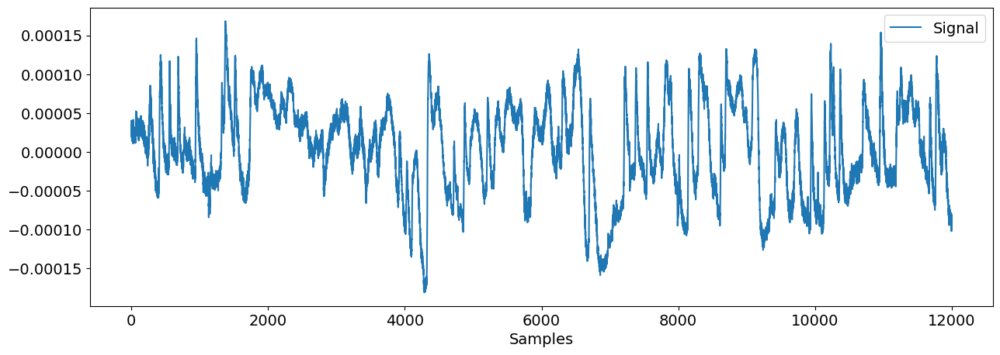
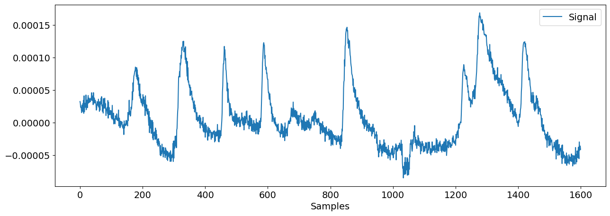
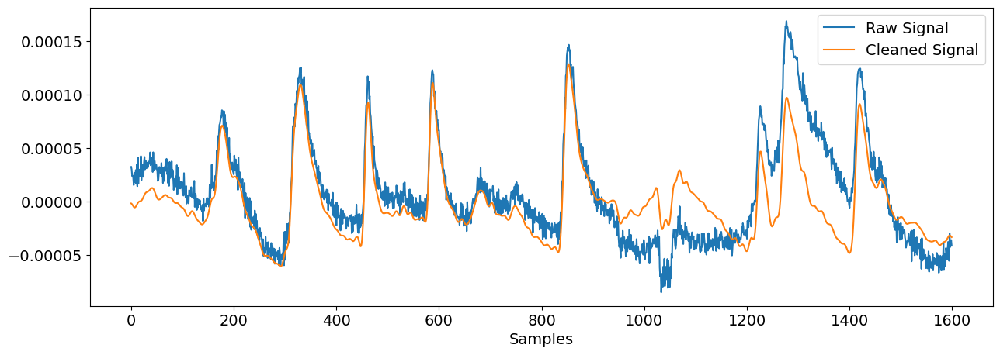

Analyze Electrooculography (EOG)#
This example can be referenced by citing the package.
This example shows how to use NeuroKit to analyze EOG data.
# Load NeuroKit and other useful packages
import numpy as np
import pandas as pd
import matplotlib.pyplot as plt
import neurokit2 as nk
Explore the EOG signal#
Let’s load the example dataset corresponding to a vertical EOG signal.
eog_signal = nk.data('eog_100hz.csv')
nk.signal_plot(eog_signal)

Let’s zoom in to some areas where clear blinks are present.
nk.signal_plot(eog_signal[100:1700])

Clean the signal#
We can now filter the signal to remove some noise and trends.
eog_cleaned = nk.eog_clean(eog_signal, sampling_rate=100, method='neurokit')
Let’s visualize the same chunk and compare the clean version with the original signal.
nk.signal_plot([eog_signal[100:1700], eog_cleaned[100:1700]],
labels=["Raw Signal", "Cleaned Signal"])

Detect and visualize eye blinks#
We will nor run a peak detection algorithm to detect peaks location.
blinks = nk.eog_findpeaks(eog_cleaned, sampling_rate=100, method="mne")
blinks
array([ 277, 430, 562, 688, 952, 1378, 1520, 1752, 3353,
3783, 3928, 4031, 4168, 4350, 4723, 4878, 5213, 5365,
5699, 5904, 6312, 6539, 6714, 7224, 7382, 7553, 7827,
8014, 8154, 8312, 8626, 8702, 9140, 9425, 9741, 9948,
10142, 10230, 10368, 10708, 10965, 11256, 11683, 11775],
dtype=int64)
events = nk.epochs_create(eog_cleaned, blinks, sampling_rate=100, epochs_start=-0.3, epochs_end=0.7)
data = nk.epochs_to_array(events) # Convert to 2D array
data = nk.standardize(data) # Rescale so that all the blinks are on the same scale
# Plot with their median (used here as a robust average)
plt.plot(data, linewidth=0.4)
plt.plot(np.median(data, axis=1), linewidth=3, linestyle='--', color="black")
[<matplotlib.lines.Line2D at 0x13235dab850>]